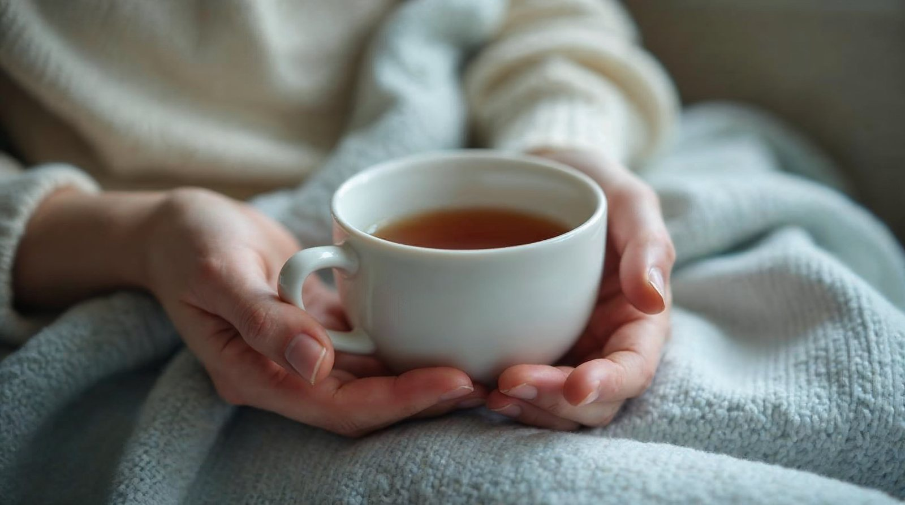
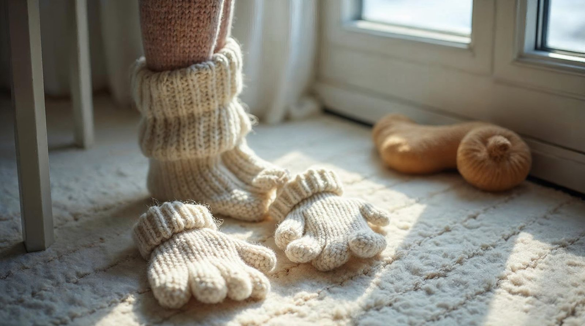
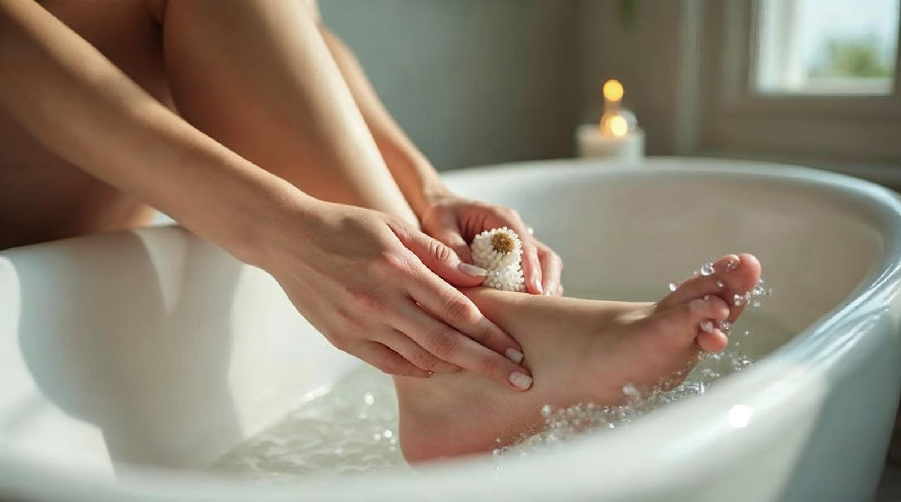
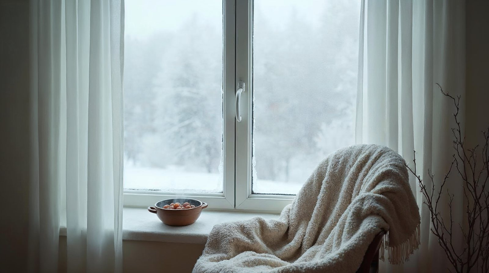
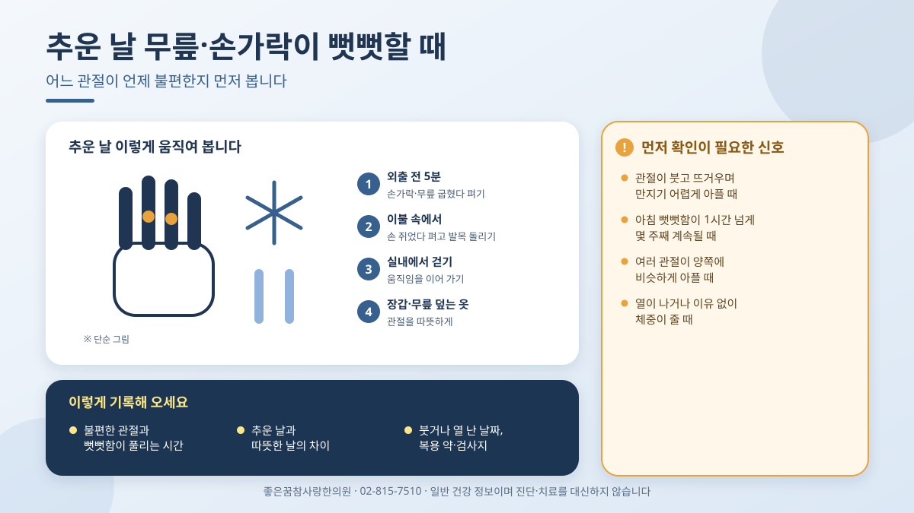

이종호 한의사 감수좋은꿈참사랑한의원 대표원장 (한의사 면허번호 19769)발행 2026-11-22 · 수정 2026-11-26
이 글의 차례
기온이 뚝 떨어진 아침, 무릎과 손가락 마디가 시리고 뻣뻣해 처음 몇 걸음이 조심스럽다는 분이 많습니다. 대개는 추위에 몸이 움츠러들고 움직임이 줄어든 영향이 크지만, 붓고 열이 나는 관절은 따로 확인이 필요합니다. 어느 관절이 언제 불편한지부터 차근차근 살펴봅니다.
진료실에서 이런 말씀 자주 들어요. "원장님, 날씨가 추워지면 무릎이 먼저 알아요." 일기예보보다 무릎이 먼저 안다는 분도 계시죠. 저는 그 말씀 들으면 "원래 그래요"라고 먼저 말씀드려요. 추위에 관절이 둔해지는 건 많은 분들이 겪는 자연스러운 일이거든요.
시린 것과 붓고 뜨거운 것은 다른 얘기예요
저는 겨울 관절을 볼 때 이 둘을 먼저 나눠요. 시리고 뻣뻣한데 따뜻한 곳에서 움직이면 풀린다면, 추위에 몸이 움츠러들고 덜 움직여서 생긴 경우가 많아요. 생활에서 데우고 움직이며 지켜볼 수 있는 쪽이죠.
반면 관절이 붓고 만지면 뜨겁고 빨갛다면, 추위 탓으로 넘길 일이 아니에요. 관절 안에 염증이 있는지 먼저 확인해야 하는 쪽이에요. 같은 겨울 관절이라도 이 차이가 가장 중요한 갈림길이에요.
왜 이런 불편이 생길 수 있나요
- 추우면 몸을 웅크리고 덜 움직이게 되어 관절 주변 근육과 힘줄이 굳은 느낌이 들 수 있습니다.
- 아침에는 밤새 움직이지 않은 관절이 풀리는 데 시간이 걸려 처음 움직일 때 더 뻣뻣하게 느껴지기 쉽습니다.
- 손발이 차가워지면 손가락 마디가 시리고 둔하게 느껴지는 경우가 있습니다.
- 겨울에는 찬물 설거지나 김장, 대청소처럼 손과 무릎을 많이 쓰는 일이 몰리기도 합니다.
- 한의학에서는 몸의 온기와 순환, 평소 활동량을 함께 살핍니다.
왜 추우면 관절이 더 뻣뻣할까요? 냉장고에서 막 꺼낸 꿀을 생각해 보세요. 숟가락이 잘 안 들어가다가 실온에 두면 금방 부드러워지잖아요. 관절 주변 근육과 힘줄, 관절 안의 미끄러운 물기도 차가우면 조금 더 뻑뻑해지는 느낌이 들 수 있어요.
게다가 추우면 몸은 손끝, 발끝보다 몸 한가운데를 먼저 따뜻하게 지키려고 해요. 그러니 손가락과 무릎 같은 바깥쪽은 피가 덜 가서 더 시리고 둔하게 느껴지는 거예요. 손발이 원래 찬 분이 겨울에 더 고생하시는 이유죠.
여기에 움직임까지 줄면 더해져요. 추우니 덜 나가고, 덜 걸으니 무릎 주변 근육이 약해지고, 근육이 약하니 관절이 더 부담을 받는 고리가 생기기 쉬워요. 그래서 저는 겨울 관절을 볼 때 날씨보다 하루에 얼마나 움직이시는지를 먼저 여쭤요.
나이가 들면서 관절이 예전 같지 않은 것도 자연스러운 변화예요. 엑스레이에 연골이 조금 닳아 보여도, 오래된 자개장처럼 잘 쓰면 오래 쓸 수 있는 경우가 많거든요. 겁내기보다 잘 쓰는 방법을 같이 찾으면 돼요.
그러니까 사실은, 추위는 원인이라기보다 원래 있던 관절의 피로를 드러내 주는 계기인 경우가 많아요. 여름엔 그럭저럭 지내던 무릎이 겨울에 먼저 신호를 보내는 거죠. 그래서 겨울 관절 불편은 내 관절이 어디쯤 지쳐 있는지 알아보는 기회가 되기도 해요.
비슷해 보이는 관절 불편은 어떻게 구분하나요?
- 움직이기 시작할 때 뻣뻣하다가 몇 분 지나면 풀리고, 많이 쓴 날 저녁에 더 아프다면, 관절을 오래 써 온 영향과 추위가 겹친 경우가 많아요.
- 양손 손가락 여러 마디가 비슷하게 붓고 아침 뻣뻣함이 30분 넘게 간다면, 류마티스내과 등 의과에서 먼저 확인해 보세요.
- 엄지발가락이나 발목, 무릎 한 곳이 하룻밤 사이 갑자기 붓고 뜨거워졌다면, 추위보다 다른 원인을 먼저 확인해야 해요.
- 관절보다 그 주변 근육이 당기고 누르면 아프다면, 근육과 힘줄 쪽인 경우가 많아요.
이런 구분은 진료실에서 같이 하면 되니까 정확하지 않아도 괜찮아요. 어느 관절이 언제, 어떻게 불편한지만 기억해 오셔도 충분해요.
집 안에서는 관절을 어떻게 따뜻하게 지킬까요?
- 아침에 이불 속에서 손가락을 쥐었다 펴고, 발목을 돌린 뒤 일어나기
- 바닥이 찬 집이라면 실내화나 두꺼운 양말을 신고 지내기
- 무릎 담요를 곁에 두고, 오래 앉을 땐 무릎을 덮어 두기
- 손을 씻은 뒤엔 물기를 바로 닦고 핸드크림으로 손을 감싸 두기
- 저녁에 따뜻한 물로 샤워해 하루 굳은 몸을 데우기
난방을 아주 세게 하기보다 옷을 한 겹 더 입는 쪽이 몸엔 덜 부담이 될 수 있어요. 실내와 바깥 온도 차가 너무 크면 밖에 나갈 때 몸이 한 번 더 움츠러들거든요.
찜질을 하실 땐 너무 뜨겁지 않게, 한 번에 길게 하기보다 짧게 여러 번 하는 게 좋아요. 감각이 둔한 곳은 화상을 입어도 모르는 경우가 있으니 자는 동안엔 피해 주세요.
먼저 이렇게 여쭙니다
- 어느 관절이 가장 불편하고, 하루 중 언제 심한가요?
- 움직이기 시작하면 풀리나요, 계속 아픈가요?
- 붓거나 뜨거운 느낌, 빨갛게 보이는 곳이 있나요?
- 날이 추워진 뒤 걷는 시간이나 활동량이 줄었나요?
- 여러 관절이 양쪽에 비슷하게 아픈가요?

예를 들면 이런 경우입니다
- 예를 들어 이른 아침 집을 나서는 직장인이 정류장까지 걷는 첫 10분 동안 무릎이 유독 뻣뻣한 경우, 집을 나서기 전 실내에서 무릎을 굽혔다 펴는 시간을 5분쯤 두고 무릎을 덮는 옷차림으로 바꿔 보도록 권합니다.
- 예를 들어 아이 식사 준비와 설거지로 찬물에 손을 자주 담그는 부모가 아침마다 손가락 마디가 둔한 경우, 따뜻한 물과 고무장갑을 쓰는지, 손을 쓰는 일이 한 시간대에 몰려 있지 않은지 함께 봅니다.
- 예를 들어 날이 추워져 바깥 산책을 거의 끊은 어르신이라면, 활동이 줄면서 다리 근육도 함께 약해지지 않았는지 살피고 실내나 지하 통로처럼 덜 추운 곳에서 걷는 시간을 이어 가도록 권합니다.
- 예를 들어 겨울 들어 출퇴근을 자가용으로 바꾸고 주말엔 집에만 있는 경우라면, 하루 걸음이 눈에 띄게 줄었을 가능성이 커요. 무릎이 시린 이유가 추위만이 아니라 덜 움직인 것일 수도 있어서, 하루 걸음 수부터 같이 확인해 봐요.

스스로 점검해 보세요
- 따뜻한 실내에 들어오거나 몇 분 움직이면 뻣뻣함이 풀린다.
- 추운 날과 따뜻한 날의 차이가 뚜렷하다.
- 한쪽 무릎이나 몇몇 손가락처럼 아픈 곳이 정해져 있다.
- 겨울 들어 하루 걷는 시간이 눈에 띄게 줄었다.
- 손가락 마디가 붓거나 빨갛고, 만지면 뜨겁다.
- 양손이나 여러 관절이 비슷하게 아프고 아침 뻣뻣함이 30분 넘게 간다.
앞의 네 가지는 몸을 데우고 움직임을 이어 가며 지켜볼 수 있는 단서인 경우가 많습니다. 뒤의 두 가지에 해당하면 관절 질환 확인이 먼저일 수 있으니, 아래 '이런 증상은 먼저 확인이 필요합니다'를 보시고 의과 진료부터 받아 주세요.

일상에서 먼저 해 볼 수 있는 것
- 외출 전 실내에서 손가락과 무릎을 5분 정도 천천히 굽혔다 펴며 몸을 먼저 데우기
- 아침에 이불 속에서 손가락을 쥐었다 펴고 발목을 돌린 뒤 일어나기
- 추운 날에도 실내에서 걷기나 계단 대신 평지 걷기로 움직임 이어 가기
- 장갑과 무릎을 덮는 옷으로 관절을 따뜻하게 감싸기
- 따뜻한 물로 손을 데우되 화상에 주의하고 붓고 열 나는 관절에는 피하기
이렇게 여러 가지를 적었지만 다 하시라는 건 아니에요. 딱 하나만 부탁드린다면, 겨울에도 하루 걷는 시간을 끊지 않는 거예요. 빨리 걷지 않으셔도 돼요. 최대한 천천히, 대신 매일이요.
오래 약하게 하는 게 잠깐 세게 하는 것보다 관절엔 훨씬 도움이 돼요. 일주일에 한 번 빨리 걷는 것보다 일주일에 서너 번 천천히 걷는 게 더 좋다고 저는 말씀드리거든요. 딴 거는 편하게 하셔도 돼요.
추운 날에도 걷기를 이어 가려면?
- 해가 뜬 뒤 기온이 조금 오른 낮 시간에 걷기
- 바람이 센 날은 지하상가, 대형마트, 실내 복도처럼 덜 추운 곳에서 걷기
- 나가기 전 집 안에서 무릎과 발목을 5분쯤 먼저 움직여 데우기
- 무릎을 덮는 바지와 미끄럼 방지 신발을 챙기기
- 계단보다 평지를 고르고, 빙판길은 보폭을 줄여 천천히 걷기
걷는 시간은 처음부터 길게 잡지 않으셔도 돼요. 10분이라도 매일 하시는 게 주말에 한 시간 몰아서 걷는 것보다 몸이 더 반가워해요. 뭐라도 하시면, 뭐라도 하면 된다는 말이에요.
손을 많이 쓰는 겨울 일은 어떻게 나눌까요?
김장, 대청소, 찬물 설거지처럼 겨울엔 손과 무릎을 많이 쓰는 일이 한꺼번에 몰리기 쉬워요. 하루에 몰아서 하면 다음 날 아침 손가락이 더 둔하다는 분이 많거든요.
일을 이틀, 사흘로 나누고, 한 시간 하면 십 분은 손을 쉬게 해 주세요. 찬물 대신 미지근한 물을 쓰고, 고무장갑 안에 얇은 면장갑을 끼면 손이 덜 차가워져요. 쪼그려 앉는 일은 낮은 의자에 앉아서 하시면 무릎 부담이 줄어요.
무거운 장바구니는 한 번에 들기보다 두 번에 나눠 옮기고, 병뚜껑처럼 손가락을 비트는 일은 고무 패드를 대고 손바닥 전체로 돌리면 마디가 덜 시큰하다는 분이 많아요. 작은 도구 하나가 손가락을 꽤 아껴 줘요.
한의원에서 함께 살필 수 있는 경우
- 추운 아침 손가락이 뻣뻣하고 잘 펴지지 않는 경우 손과 손목의 움직임을 함께 살핍니다.
- 겨울철 무릎이 시리고 계단에서 둔한 경우 무릎 주변 근육과 걷는 습관을 함께 살핍니다.
- 손발이 쉽게 차가워지는 경우 몸의 온기와 순환, 식사와 잠을 함께 여쭙습니다.
- 겨울마다 같은 관절이 시리고 활동이 줄어드는 경우 걷는 습관과 다리 근육을 함께 봅니다.
관절 때문에 오셨는데 손발 온도와 잠, 소화를 여쭤 보면 의아해하시는 분도 있어요. 저는 무릎만 안 시리게 하려는 게 아니라 몸 전체를 좋게 하려는 거예요. 몸이 덜 차가워지면 겨울 관절도 덜 둔하다는 분이 계시거든요.
안 시리다고 끝난 게 아니에요. 따뜻한 날 괜찮아졌다고 걷기를 멈추면, 다음 한파 때 또 같은 아침을 맞기 쉽거든요. 겨울 내내 걷는 습관 하나는 이어 가 주셨으면 해요.
첫 방문은 이렇게 진행합니다
좋은꿈참사랑한의원의 첫 진료는 대체로 아래 순서로 진행합니다.
- 이야기 듣기: 어느 관절이 언제부터, 하루 중 언제 불편한지, 추운 날과 따뜻한 날의 차이, 활동량과 잠, 손발의 온기를 먼저 듣습니다.
- 맥과 혀, 배 살피기: 모든 분께 맥을 짚고 혀와 배를 살펴 몸의 온기와 순환 상태를 함께 봅니다.
- 움직임 확인: 무릎 굽히고 펴기, 계단 오르내리는 동작, 손가락 쥐었다 펴기를 함께 해 보며 붓기와 열감, 움직이는 범위를 확인합니다.
- 필요하면 초음파: 필요하다고 판단될 때 초음파로 관절 주변 힘줄과 붓기를 살핍니다. 뼈 안쪽이나 관절 깊은 곳은 초음파로 보기 어려워 필요하면 영상 검사가 가능한 의료기관을 안내합니다.
- 방향 정하기: 상태에 맞춰 침·약침·추나 등을 정하고, 필요하다고 판단되면 IS400 극초단파 온열 치료를 함께 의논합니다. 몸속에 금속이나 전자 의료기기가 있다면 미리 말씀해 주세요. 귀가 전에는 추운 날 집에서 해 볼 움직임과 다음에 다시 확인할 점을 알려 드립니다.

이렇게 기록해 오시면 상담이 쉬워집니다
- 가장 불편한 관절과 아침 뻣뻣함이 풀리기까지 걸리는 시간
- 추운 날과 따뜻한 날의 차이
- 붓거나 열이 났던 날짜와 부위
- 복용 중인 약과 받았던 혈액 검사 결과지(있다면)
기록은 아침에 눈뜨자마자 휴대전화 메모에 한 줄이면 돼요. "영하 5도, 오른쪽 무릎 뻣뻣 10분, 어제 김장" 정도로요. 2주만 모아도 기온과 전날 일, 뻣뻣함 사이의 관계가 보이는 경우가 많아요.
붓거나 뜨거웠던 날이 있다면 그 부위를 사진으로 남겨 두세요. 진료 날엔 가라앉아 있는 경우가 많아서, 사진이 큰 도움이 되거든요.
얼마나 지켜보고, 언제 상담하면 좋을까요
- 몸을 데우고 몇 분 움직이면 풀리는 정도라면, 외출 전 준비 동작과 옷차림을 바꾼 뒤 2주쯤 아침 뻣뻣함이 풀리는 시간을 적어 보세요.
- 2주가 지나도 그대로이거나 따뜻한 날에도 불편이 이어진다면 상담을 받아 보세요.
이런 증상은 먼저 확인이 필요합니다
- 관절이 갑자기 붓고 뜨겁거나 붉어지는 경우, 특히 만지기 어려울 만큼 아프거나 열이 함께 나는 경우
- 아침 뻣뻣함이 30분 넘게 이어지는 날이 몇 주째 계속되는 경우
이런 신호가 있으면 한의원보다 가까운 병원이나 응급실을 먼저 찾으세요.
관련 글
- 요리나 공예처럼 손을 많이 쓰는 50대의 손가락 마디가 욱신거릴 때는 어떻게 살피나요?
- 관절이 아플 때 초음파로 무엇을 확인하고, 무엇은 확인하기 어려운가요?
- 근육이 아픈 것인지 관절이 아픈 것인지 어떻게 짚어서 말하나요?

여쭙는 것
- 어느 관절이 가장 불편하고, 하루 중 언제 심한가요?
- 움직이기 시작하면 풀리나요, 계속 아픈가요?
- 붓거나 뜨거운 느낌, 빨갛게 보이는 곳이 있나요?
생활에서 해 볼 것
- 외출 전 실내에서 손가락과 무릎을 5분 정도 천천히 굽혔다 펴며 몸을 먼저 데우기
- 아침에 이불 속에서 손가락을 쥐었다 펴고 발목을 돌린 뒤 일어나기
- 추운 날에도 실내에서 걷기나 계단 대신 평지 걷기로 움직임 이어 가기
한의원에서 함께 살필 것
- 추운 아침 손가락이 뻣뻣하고 잘 펴지지 않는 경우 손과 손목의 움직임을 함께 살핍니다.
- 겨울철 무릎이 시리고 계단에서 둔한 경우 무릎 주변 근육과 걷는 습관을 함께 살핍니다.
- 손발이 쉽게 차가워지는 경우 몸의 온기와 순환, 식사와 잠을 함께 여쭙습니다.
먼저 확인이 필요한 신호
- 관절이 갑자기 붓고 뜨겁거나 붉어지는 경우, 특히 만지기 어려울 만큼 아프거나 열이…
- 아침 뻣뻣함이 30분 넘게 이어지는 날이 몇 주째 계속되는 경우
한눈에 보는 표
| 구분 | 핵심 |
|---|---|
| 여쭙는 것 | 어느 관절이 가장 불편하고, 하루 중 언제 심한가요? 움직이기 시작하면 풀리나요, 계속 아픈가요? |
| 생활에서 해 볼 것 | 외출 전 실내에서 손가락과 무릎을 5분 정도 천천히 굽혔다 펴며 몸을 먼저 데우기 아침에 이불 속에서 손가락을 쥐었다 펴고 발목을 돌린 뒤 일어나기 |
| 한의원에서 함께 살필 것 | 추운 아침 손가락이 뻣뻣하고 잘 펴지지 않는 경우 손과 손목의 움직임을 함께 살핍니다. 겨울철 무릎이 시리고 계단에서 둔한 경우 무릎 주변 근육과 걷는 습관을 함께 살핍니다. |
| 먼저 확인이 필요한 신호 | 관절이 갑자기 붓고 뜨겁거나 붉어지는 경우, 특히 만지기 어려울 만큼 아프거나 열이 함께 나는 경우 아침 뻣뻣함이 30분 넘게 이어지는 날이 몇 주째 계속되는 경우 |
자주 묻는 질문
추우면 관절이 더 아픈 것은 한의원에서 어떻게 살피나요?
불편한 관절의 위치와 시간대, 붓기 여부, 활동 습관을 묻고 관절의 움직임을 보며 생활 전체와 함께 살핍니다.
찜질은 따뜻하게 하나요, 차갑게 하나요?
뻣뻣하고 시린 느낌에는 따뜻하게 하는 편이 일반적이지만, 붓고 열이 있는 관절은 먼저 상태를 확인하는 것이 좋습니다.
겨울에는 운동을 쉬는 것이 좋을까요?
아프지 않은 범위의 가벼운 움직임은 이어 가는 편이 일반적입니다. 통증이 커지면 멈추고 상담해 주세요.
손가락 마디가 굵어진 것 같으면 어떻게 하나요?
모양 변화가 있으면 원인을 먼저 확인하는 것이 좋아 진료 때 함께 보여 주시고, 필요하면 다른 의료기관 검사를 안내합니다.
보험 적용은 어떻게 확인하나요?
건강보험(또는 자동차보험) 적용 여부는 방문 전 전화로 확인해 주세요.
좋은꿈참사랑한의원은 재진 때 지난번 이야기부터 이어서 여쭙니다. 진료시간과 예약은 오시는 길에서 확인하세요.
어디서 상담받을 수 있나요?
좋은꿈참사랑한의원은 서울 동작구 만양로2길 2 신성빌딩 3층·5층(서울 동작구 상도동, 7호선 상도역 3번 출구 근처)에 있습니다. 한의사 3명(이종호 대표원장, 조영기 수석진료원장, 정원영 진료원장)이 진료합니다. 진료시간은 평일 09:30~20:00(점심 13:00~14:00), 토·일·공휴일 09:30~15:00이며, 방문 전 전화로 확인을 권합니다. 예약은 네이버 예약, 카카오톡 상담, 전화 02-815-7510로 받습니다.
이 글은 일반적인 건강 정보이며 개인의 진단이나 치료를 대신하지 않습니다. 증상이 있거나 복용 중인 약이 있다면 진료를 통해 확인하세요. 치료 효과는 개인마다 다를 수 있습니다.
작성 기준: 일반적으로 알려져 있는 건강 정보를 참고해 정리했습니다(대표원장 감수). 증상 기록은 1~2주 동안 하루 1회, 비슷한 시간에 적어 오시면 지난 상태와 비교하기 쉽습니다.